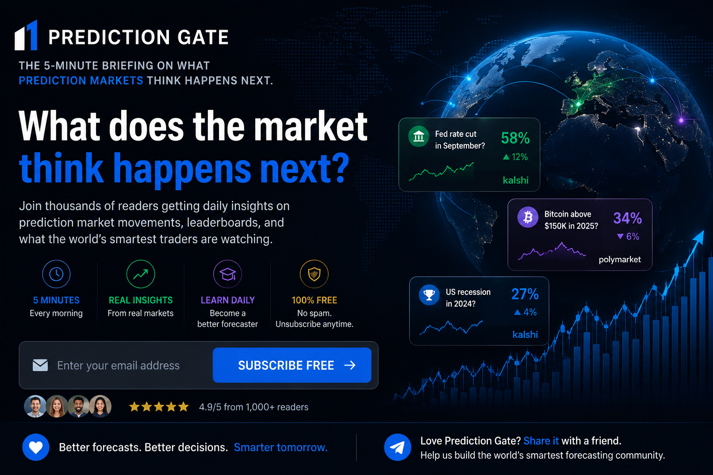
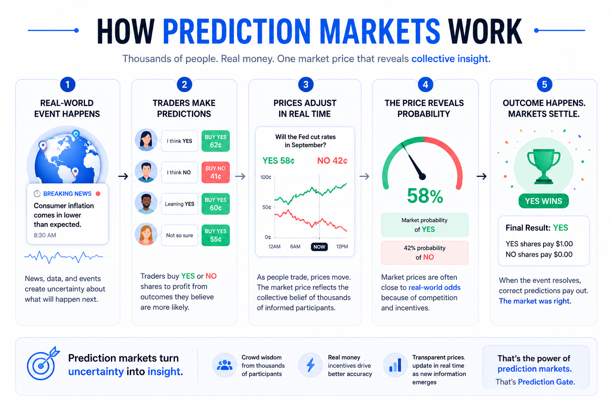

Good morning. Every day, millions of people wake up wondering what will happen next. Will inflation cool? Will Bitcoin rally? Will a hurricane make landfall? Will AI change another industry?
Prediction markets do not guess. They assign probabilities. While headlines tell you what happened yesterday, prediction markets show what informed participants believe may happen tomorrow.
Welcome to PredictionGate. Let's see what the market is thinking today.
Prediction Pulse
Biggest Increase: Federal Reserve September Rate Cut
Rate-cut expectations climbed overnight as traders weighed economic data, softer inflation expectations, signs of labor-market cooling, and falling Treasury yields.
Biggest Decline: Bitcoin Above $150,000 by Year-End
Confidence eased after a strong run, with traders watching profit taking, lighter volume, and short-term uncertainty around crypto momentum.
Market to Watch: Atlantic Hurricane Activity
Weather traders continue watching tropical developments as peak hurricane season approaches. Forecast updates can create rapid movement throughout the day.
Daily Leaderboards
| Market | Move |
|---|---|
| Fed Rate Cut | +11% |
| Hurricane Landfall | +8% |
| Bitcoin $150k | -5% |
| AI Regulation | +4% |
Highest volume: Federal Reserve, Bitcoin, U.S. economy.
Most watched: Inflation, AI, weather, crypto.
News That Moved Markets
Weather: Meteorologists are monitoring Atlantic activity, and forecast-model updates remain a key driver for hurricane probability markets.
Economy: Investors are still debating the timing of the Federal Reserve's next rate decision. Inflation and employment data remain the major catalysts.
Artificial intelligence: AI announcements continue driving discussion around regulation, enterprise adoption, and long-term investment.
Crypto: Bitcoin remains one of the most actively watched prediction-market topics, with traders balancing institutional demand against macro uncertainty.
Global markets: International developments continue influencing energy, supply chains, and geopolitical forecasting markets.
Prediction Academy
What Does a 65% Probability Mean?
A market showing 65% does not mean an event is guaranteed. It means the market is pricing approximately a 65% chance that the event occurs. If similar situations happened 100 times, traders would expect roughly 65 successes and 35 failures.
Prediction markets measure probability, not certainty.

Market Spotlight
Federal Reserve Rate Decision
One of today's most watched themes centers on whether the Federal Reserve cuts interest rates later this year.
Why traders are watching: inflation reports, employment data, consumer spending, and Federal Reserve speeches.
What could change the odds: strong economic reports, unexpected inflation, changes in unemployment, or new guidance from Federal Reserve officials.
Understanding why markets move is often more valuable than simply knowing that they moved.
Markets to Watch Today
- Economic data releases
- Central bank commentary
- Tropical weather updates
- AI industry announcements
- Stock market earnings
- Major sporting events
Odds Explained
Why Do Prediction Markets Move Before Headlines?
Markets react immediately. As soon as new information becomes available, traders begin buying and selling contracts. Prices can adjust within seconds, while news articles often arrive minutes or even hours later. That is why prediction markets can provide an early view into changing expectations.
Around the Internet
Interactive tool: Explore live probability changes across major markets.
AI tool: A new forecasting assistant is helping users summarize market movements in plain English.
Recommended reading: Learn how probabilities influence business, investing, weather forecasting, and decision making.
Interesting market: One unusual question asks what unexpected event will dominate next week's headlines. Sometimes the most entertaining markets are also the most revealing.
Closing Thought
The future is not written. Every trade, every forecast, and every probability represents humanity's best estimate of what comes next.
Prediction markets do not predict the future with certainty. They measure how expectations change as new information arrives. Tomorrow, those probabilities will change again. We will be here to explain why.
Share PredictionGate
Enjoyed today's briefing? Share it with one friend interested in forecasting, economics, AI, weather, business, or prediction markets. The more people who think in probabilities, the better decisions we all make.
Disclaimer
PredictionGate provides news and informational analysis only. It does not provide financial, investment, legal, or gambling advice. Market probabilities may change quickly and do not guarantee outcomes. Verify live prices and source data before relying on any market figure.